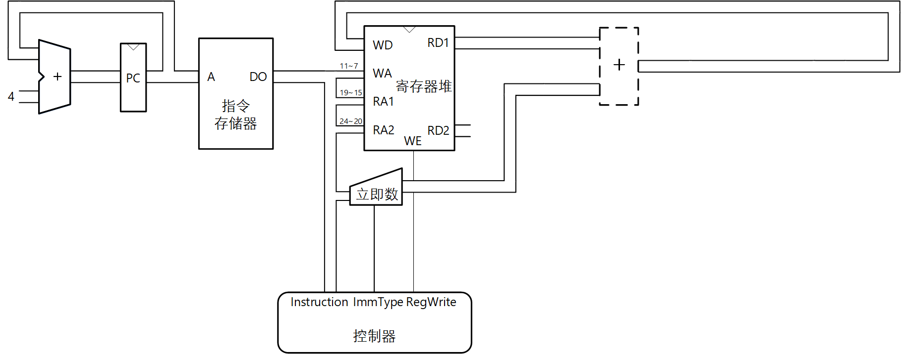

只有一条addi指令的CPU设计
实验原理
实验材料中给出了图 1电路的HDL代码，它仅支持addi rd,rs1,imm指令。

图 1. 仅支持addi rd,rs1,imm指令的数据通路示例
实验步骤
1. 创建CPU实验工程
CPU实验的工程框架与前面实验不同，实验材料中提供了相关的文件。用Quartus Prime打开project文件夹中的RV_Project.qpf工程文件，该工程已经包含了CPU实验的工程框架的基础文件。如果因为Quartus软件版本问题无法直接使用RV_Project.qpf，project文件夹中包含了一个create_project_rv_pocket.tcl文件以及使用说明“用TCL文件自动创建Quartus工程”，按照说明创建工程。
2. 添加CPU设计文件
将verilog文件夹下的所有源文件添加到工程，这些文件是实现addi指令的参考设计；但是没有提供寄存器堆模块的设计文件，须将前面存储器实验自己设计的三端口寄存器堆模块添加到工程中。注意，definitions.sv要放在文件列表的最上面，Quartus按照列表的顺序编译；或者在引用相关定义的文件中用`include 包含"definitions.sv"。
3. 在实验系统上运行
编译Quartus工程后在实验系统上运行以下指令。
addi x5, x0, 100 addi x6, x5, -1 addi x7, x6, 0
分析运行结果，发现第2条指令的运算结果80000063是错误的。